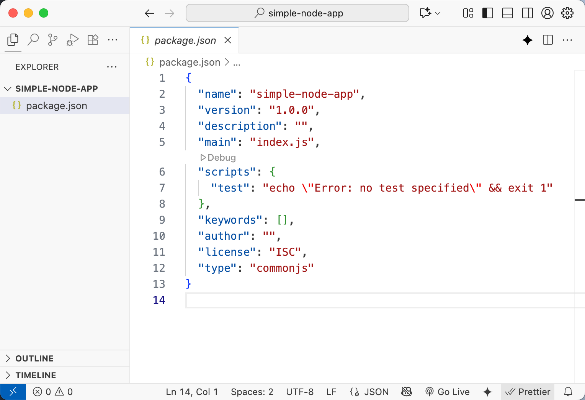
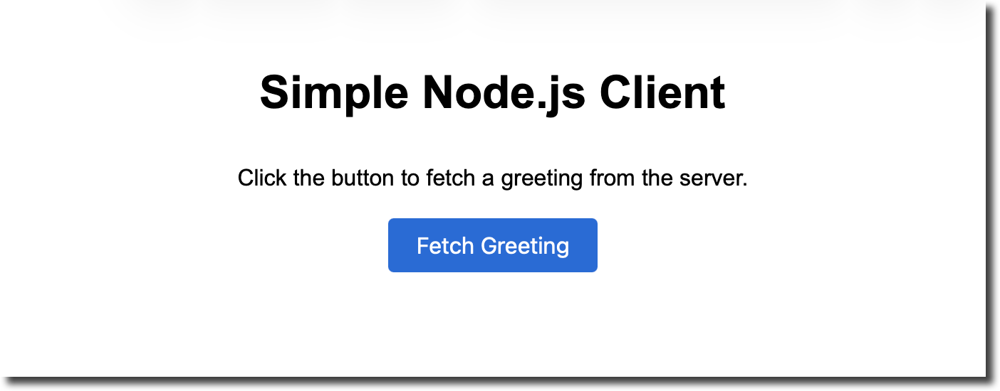
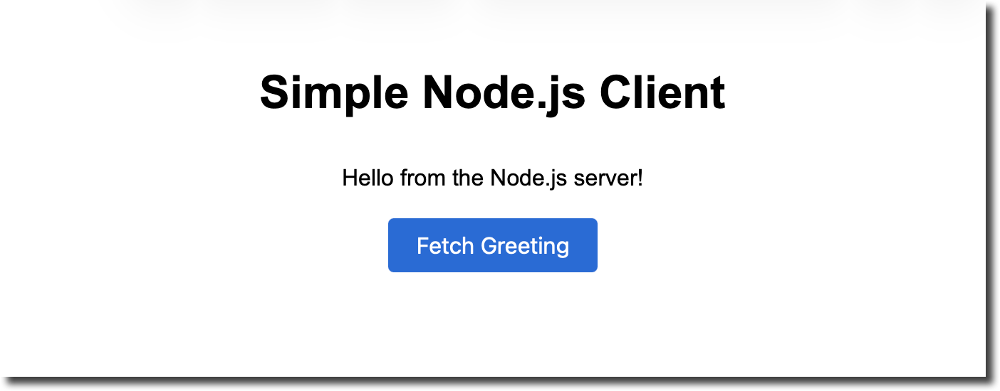
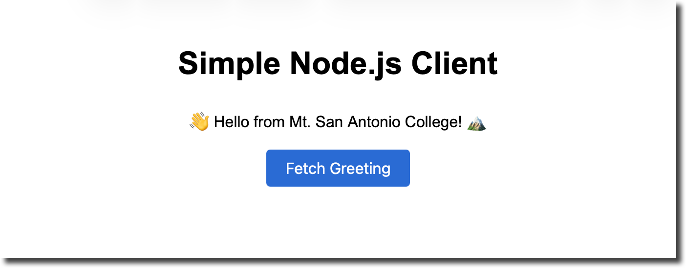
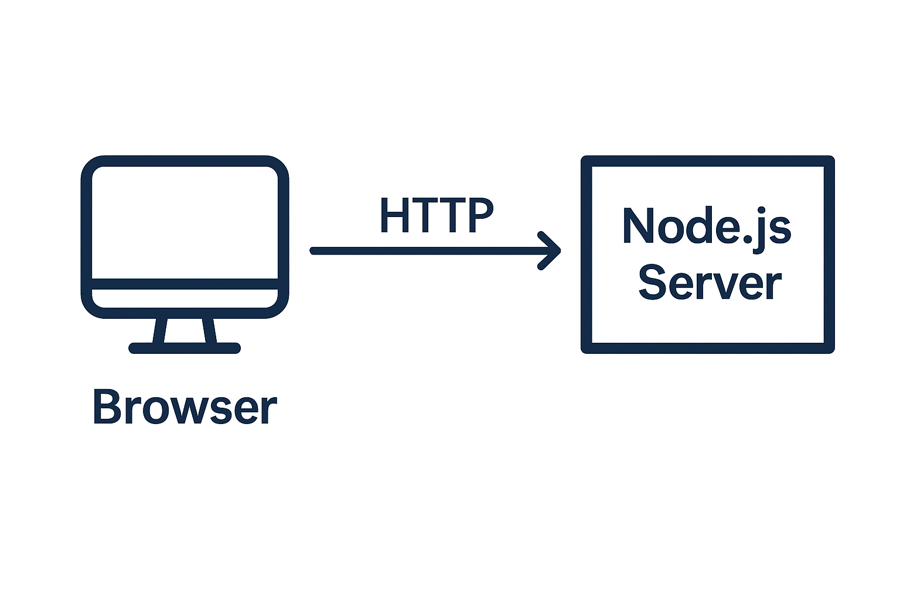

This tutorial walks through building a very simple
Node.js application and connecting a basic web page
to it. Along the way you will learn what Node.js and Express are,
why a package.json file is important and how to use the
modern Fetch API to communicate between your front
end and back end. The tutorial assumes that you already know basic
HTML and CSS.
Tools Needed
Node.js is an asynchronous event‑driven JavaScript runtime built on Chrome’s V8 engine. It was designed to build scalable network applications.
Because Node is not tied to a browser environment, it exposes system‑level APIs such as file access and network sockets. When combined with the npm package manager and web frameworks like Express, Node becomes a powerful platform for building back‑end services that speak HTTP.
package.json?Node uses a plain‑text file called package.json
to manage dependencies and describe your project. The file lists the
package’s name, version, description, entry point, dependencies and
development dependencies, the versions of Node it can work with and
other metadata. When you install packages with npm they are added to
the appropriate section of package.json; later, npm can
reinstall every dependency automatically. In other words,
package.json tells npm everything it needs to fetch and
run your application.
Express is a small web framework built on top of
Node’s HTTP server. It simplifies tasks such as routing (mapping
URLs to functions) and handling responses. A minimal Express
application is just a few lines long: you create an
app, specify handlers with app.get() and
start listening on a port. The official documentation’s “Hello
world” example shows how the app listens on port 3000 and responds
with “Hello World!” for requests to the root URL. We will use
Express in this tutorial to avoid having to write raw HTTP server
code.
Create a working folder. Open your terminal, navigate to a convenient location (e.g. your Desktop) and create a new directory named simple‑node‑app:
mkdir simple-node-app
cd simple-node-appThis folder will contain both your Node.js server and the web page.
Initialize a package.json file.
Inside the simple-node-app folder run:
npm init -yThe npm init command generates a
package.json file and prompts you for the package’s
name, version and entry file. Using the -y flag accepts
the defaults so you don’t have to answer each question. The
resulting file contains fields like name,
version and main. Later, when you install
Express, npm will automatically add it to the
dependencies section.

Install Express. Still in the project directory, install Express as a dependency:
npm install expressnpm will download Express into a node_modules folder
and write an entry in the dependencies section of your
package.json. Installing Express here keeps your server
dependencies separated from system‑wide modules.
Create a server file. In the root of
simple-node-app, create a new file named
server.js. Open it in your editor and add the
following code:
const express = require('express');
const app = express();
const port = 3000;
// Serve static files from the "public" directory
app.use(express.static('public'));
// API route that returns a JSON greeting
app.get('/api/greet', (req, res) => {
res.json({ message: 'Hello from the Node.js server!' });
});
// Start the server
app.listen(port, () => {
console.log(`Server running at http://localhost:${port}/`);
});require('express') imports the Express module. In
Node you use require() to load external modules; this
is part of the CommonJS module system.app.use(express.static('public')) tells Express to
serve files from a folder named public relative to your
project’s root. This will be used for the HTML page later.app.get('/api/greet', ...) defines a
route that responds to HTTP GET requests made to
/api/greet. When the server receives a request for this
URL it calls the provided function and sends a JSON response. The
res.json() method sets the correct headers and converts
the JavaScript object into JSON.app.listen(port, ...) starts the server and
instructs it to listen on the given port. The Express “Hello World”
example explains that the app listens on a port and responds to
requests by executing your callback.Start the server. Save the file and run the following command in your terminal:
node server.jsIf everything is configured correctly you should see a message like:
Server running at http://localhost:3000/The server will continue running in your terminal until you stop
it (use Ctrl+C to exit). Opening
http://localhost:3000/api/greet in a browser should
display a JSON response:
{"message":"Hello from the Node.js server!"}. For now
there isn’t an HTML page yet because we haven’t created it.
The web page will live in a folder named public
(the same folder we configured Express to serve). Express
automatically makes files in this directory accessible via
http://localhost:3000/<filename>.
Create the public folder and files. Inside your project directory run:
mkdir public
touch public/index.html
touch public/style.cssEdit public/index.html. Open
the file and add the following HTML:
<!DOCTYPE html>
<html lang="en">
<head>
<meta charset="UTF-8">
<meta name="viewport" content="width=device-width, initial-scale=1.0">
<title>Simple Node.js Client</title>
<link rel="stylesheet" href="style.css">
</head>
<body>
<h1>Simple Node.js Client</h1>
<p id="response-text">Click the button to fetch a greeting from the server.</p>
<button id="fetch-btn">Fetch Greeting</button>
<script>
const button = document.getElementById('fetch-btn');
const responseText = document.getElementById('response-text');
button.addEventListener('click', async () => {
try {
// Use the Fetch API to request data from the Node server
const response = await fetch('/api/greet');
if (!response.ok) {
throw new Error(`Server error: ${response.status}`);
}
const data = await response.json();
responseText.textContent = data.message;
} catch (err) {
responseText.textContent = err.message;
}
});
</script>
</body>
</html><link> tag includes a separate
style.css file for styling.<button> is provided so users can decide
when to fetch the data.<script> tag we use the
Fetch API. MDN describes fetch as a modern
replacement for XMLHttpRequest; it is a promise‑based
global function that makes HTTP requests and returns a
Response object oai_citation:9‡developer.mozilla.org.
We call fetch('/api/greet') and await the response. If
the request is successful we call response.json() to
parse the JSON body; otherwise we throw an error. The result is
displayed inside the <p> element.Add basic styling. Edit
public/style.css with some simple CSS to center the
page and style the button:
body {
font-family: Arial, sans-serif;
max-width: 600px;
margin: 40px auto;
text-align: center;
padding: 0 20px;
line-height: 1.6;
}
button {
padding: 10px 20px;
font-size: 16px;
cursor: pointer;
background-color: #2a6bd4;
color: #fff;
border: none;
border-radius: 4px;
}
button:hover {
background-color: #184a8c;
}Feel free to customise the colours and fonts to your liking. The CSS above centres the content and gives the button a pleasant appearance.
Start the server (if it isn’t already
running) with node server.js.
Open the web page. In your browser navigate
to http://localhost:3000/. Because Express serves
static files from the public folder, the
index.html file will load automatically. You should see
the page title and a button. When you click the button, the browser
will call the /api/greet route, receive a JSON response
and update the paragraph text.
The Fetch API call returns a Promise that
resolves with a Response object; we then parse the
response body with response.json() and update the DOM.
MDN notes that fetch() returns a promise that can be
fulfilled with a Response representing the server’s response oai_citation:10‡developer.mozilla.org.


/api/greet route and refresh the web page. The
client automatically pulls in the new message when you click the
button. You can add additional routes (e.g. /api/time
that returns the current date) and fetch them using different
buttons.
Node.js enables you to run JavaScript on the server side, while the browser still executes JavaScript on the client side. The two environments communicate over HTTP. The diagram below summarises the relationship:

index.html and
style.css./api/greet using
the Fetch API.Understanding this flow will help you build more complex applications. Node.js handles I/O asynchronously and does not block the event loop, so the server remains responsive even when handling multiple simultaneous requests.
fetch('/api/echo', { method: 'POST', body: JSON.stringify({ message: 'Hello' }), headers: { 'Content-Type': 'application/json' }})
and handle it in your server with app.post().cors package to enable requests from different
origins.This simple project demonstrates the fundamentals of building a Node.js back end and connecting it to a front‑end web page. From here you can explore more features of Express, add middleware for authentication, integrate a templating engine (like Pug or EJS), or build a single‑page application with a framework like React or Vue.